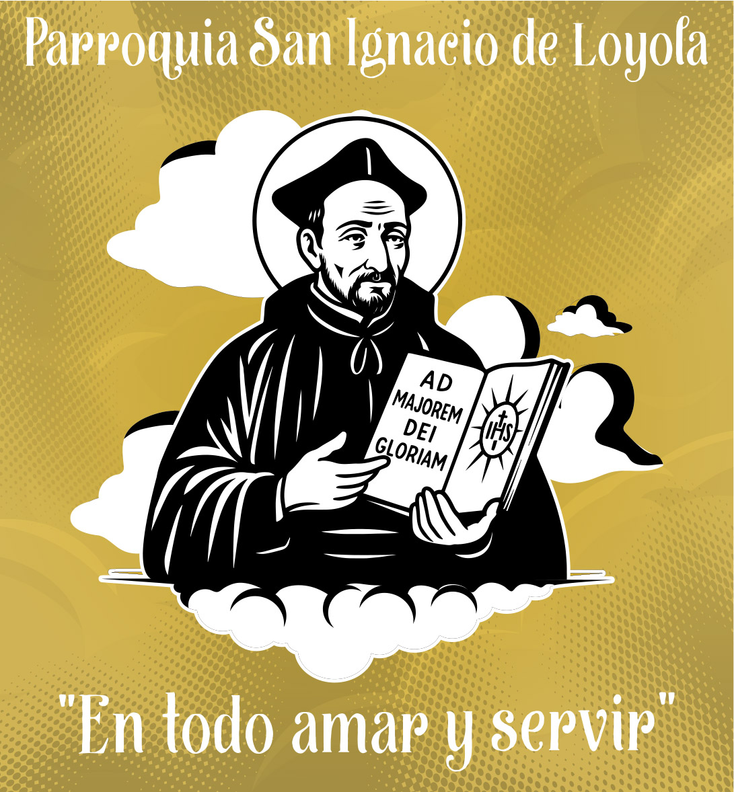
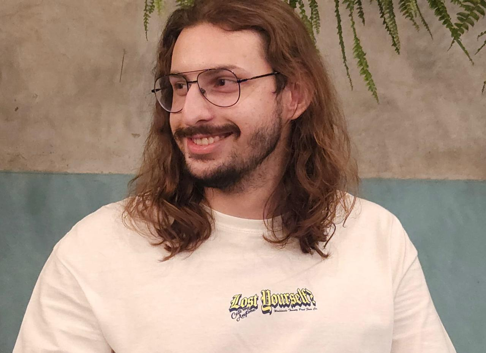
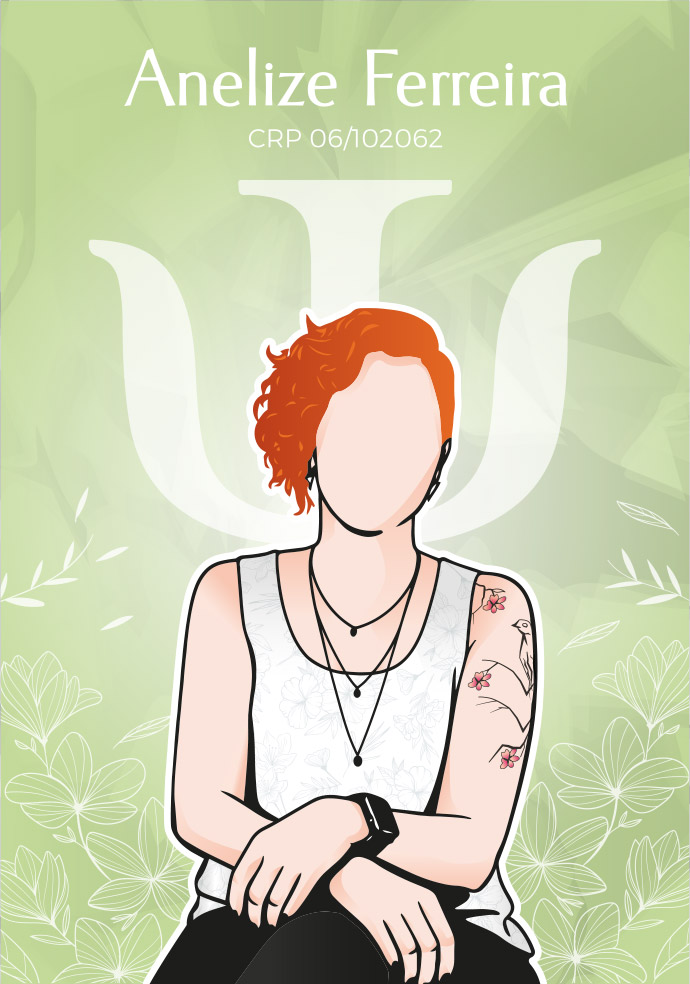
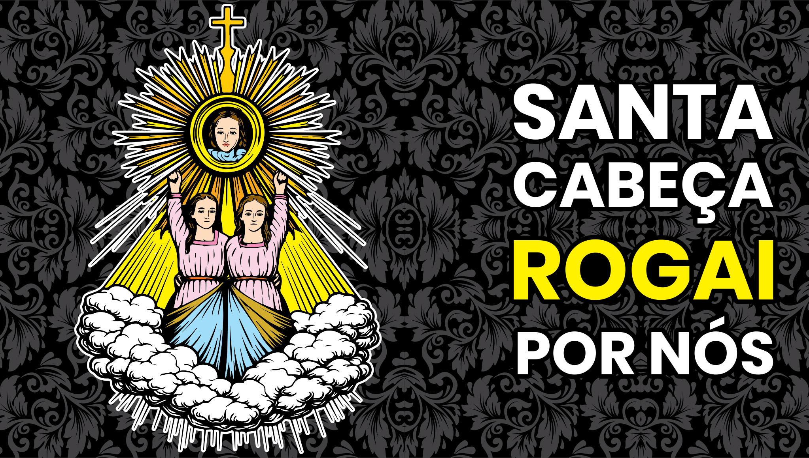
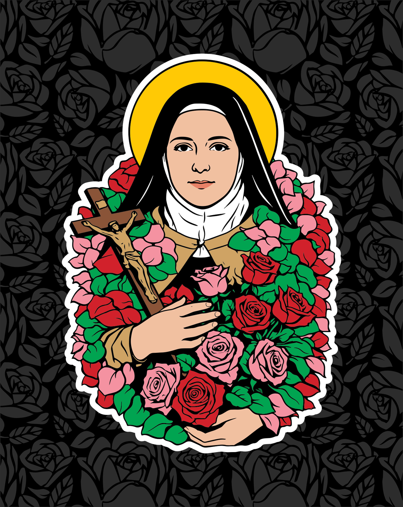
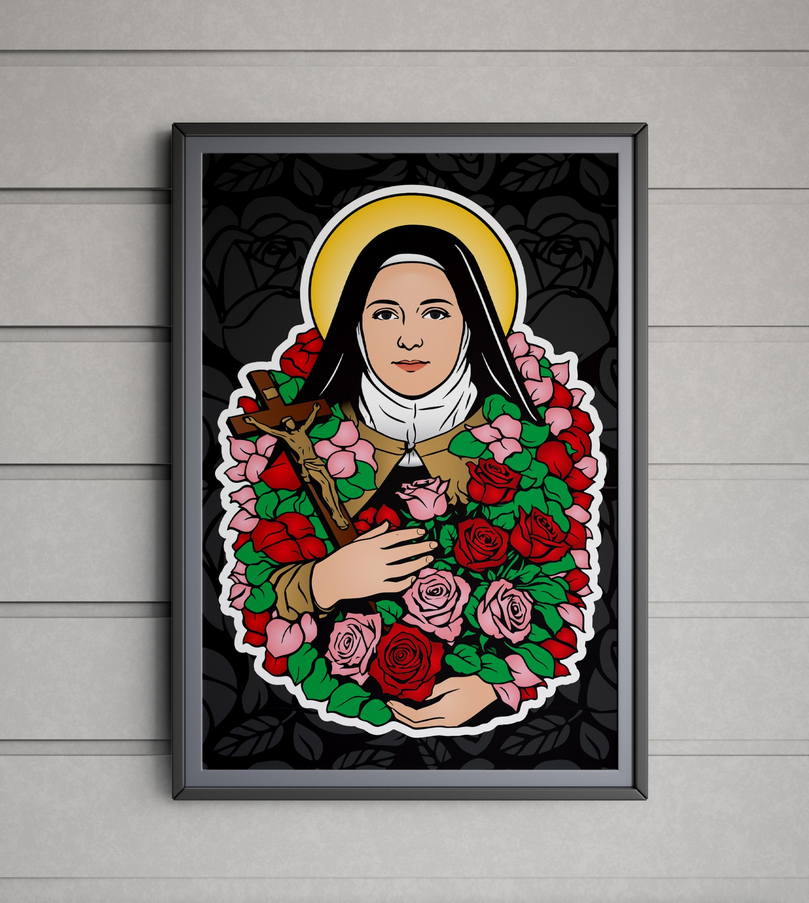

Paróquia San Ignacio de Loyola
Ilustração e composição voltadas à comunicação religiosa.
Designer gráfico com experiência em identidade visual, materiais gráficos, produção para impressão e desenvolvimento de produto. Atuação desde o briefing até a finalização, combinando domínio técnico de Illustrator e Photoshop com organização, pensamento analítico e atenção aos detalhes.

Uma seleção que mostra ilustração vetorial, identidade visual, composição gráfica e aplicações. Nos projetos vetoriais, use o botão ver curvas para ampliar o SVG sem perda de qualidade.

Ilustração e composição voltadas à comunicação religiosa.

Construção ilustrada, composição e linguagem visual aplicada.

Ilustração religiosa com forte contraste e linguagem gráfica contemporânea.

Ilustração vetorial, detalhamento floral e preparação para aplicação.

Mockup de apresentação para valorizar a aplicação final do projeto.
Minha experiência profissional envolve desenvolvimento de identidades visuais para produtos personalizados, criação de layouts para impressão, preparação e fechamento de arquivos e contato direto com clientes para levantamento de briefing e definição de soluções visuais.
Atualmente curso Psicologia, ampliando meu repertório em comportamento humano, comunicação e experiência do usuário. Essa combinação entre técnica, sensibilidade visual e compreensão de pessoas contribui para uma comunicação mais clara e intencional.
Experiência profissional, formação e competências apresentadas de forma resumida para leitura rápida.
Desenvolvimento de identidades visuais, criação de layouts para impressão, briefing com clientes, preparação e fechamento de arquivos, apoio às equipes comercial e de produção e organização do fluxo entre setores.
Formação voltada a comportamento humano, comunicação, pensamento analítico e resolução de problemas.
Marketing Digital, comunicação visual, mídias digitais, produção de conteúdo, identidade visual, edição de imagens e ferramentas digitais.
Vetorização, composição, identidade visual, fechamento e organização de arquivos.
Tratamento, edição de imagens e preparação de materiais gráficos.
Inglês — conversação intermediária · Espanhol — básico.
Disponível para oportunidades em design gráfico, identidade visual, ilustração vetorial, produção gráfica e desenvolvimento de materiais para marcas e instituições.